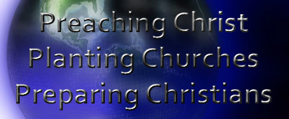
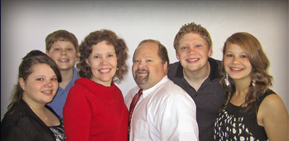

|  | Serving at: La Iglesia Bautista La Conexión a La Esperanza Serving From: Latham Bible Baptist Church Serving with: abwe |
||
| We, the ABWE missionaries serving in Ecuador choose to team together to establish a national church planting movement that will result in an international missionary movement by partnering with Ecuadorian believers through evangelism, discipleship, leadership training and fellowship for the glory of God. |  |